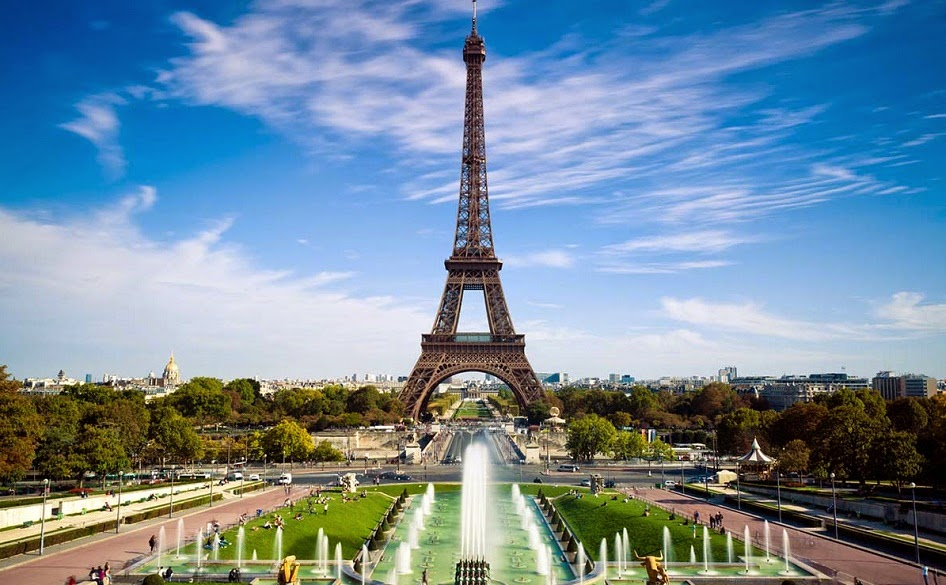

França |
|
França é um país, ou, mais especificamente, um Estado unitáriodesconcentrado, localizado na Europa Ocidental, com várias ilhas e territórios ultramarinos noutros continentes. A França Metropolitanaestende-se do Mediterrâneo ao Canal da Mancha e Mar do Norte, e dorio Reno ao Oceano Atlântico. É muitas vezes referida comoL'Hexagone ("O Hexágono") por causa da forma geométrica do seu território e partilha fronteiras com a Bélgica e Luxemburgo a norte;Alemanha a nordeste; Suíça e Itália a leste; Espanha ao sul e com asmicronações de Mônaco e Andorra. A nação é o maior país da União Europeia em área e o terceiro maior da Europa, atrás apenas daRússia e da Ucrânia (incluindo seus territórios ultramarinos, como aGuiana Francesa, o país torna-se maior que o território ucraniano). Por cerca de meio milênio, o país tem sido uma grande potência, com forte influência econômica, cultural, militar e política no âmbito europeu e global. Durante muito tempo a França exerceu um papel de liderança e hegemonia na Europa (principalmente a partir da segunda metade do século XVII e parte do XVIII). Ao longo daqueles dois séculos, a nação iniciou a colonização de várias áreas do planeta e, durante o século XIX e início do século XX, chegou a constituir osegundo maior império da história, o que incluía grande parte daAmérica do Norte, África Central e Ocidental, Sudeste Asiático e muitas ilhas do Pacífico. É conhecida como a terra natal da primeira grandeenciclopédia do mundo, a chamada Encyclopédie, formada por 35 volumes e publicada entre 1751 e 1766, em pleno iluminismo do século XVIII.
 |